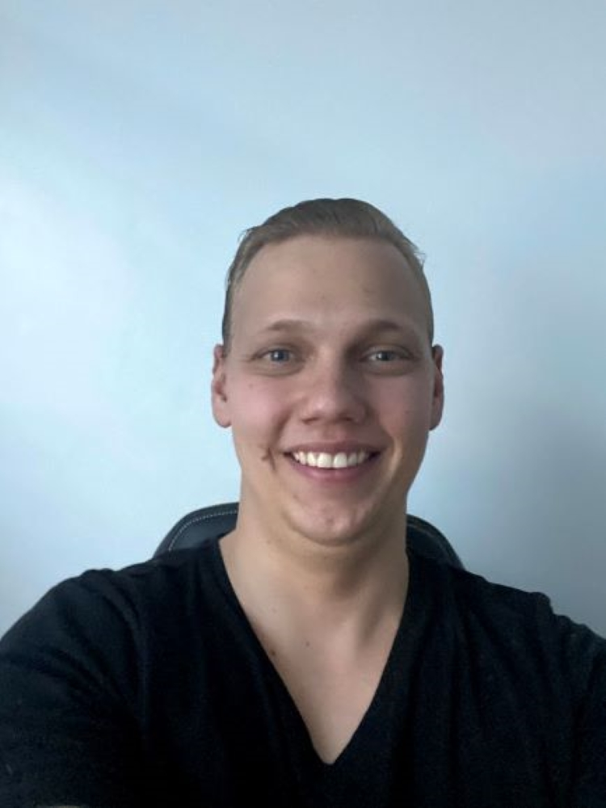

 Grew up in Casper, Wyoming, where its windy 98% of the time. I had a pretty large family growing up with nine kids in total, so the house was never quiet! I traveled all over Wyoming, and a bunch of other Rocky Mountain states for competitive soccer. I wasn't that great of a player but still enjoyed watching my siblings play. Something I'm very passionate about is music. I have taught my self how to play the drums with some help from Rock Band. I dabble on the electric guitar but still prefer to let some aggression out on the drums!
Fun Fact is I am in remission from a brain tumor called 'PPTID,' which stands for Pineal parenchymal tumor of intermediate differentiation since 2016!.